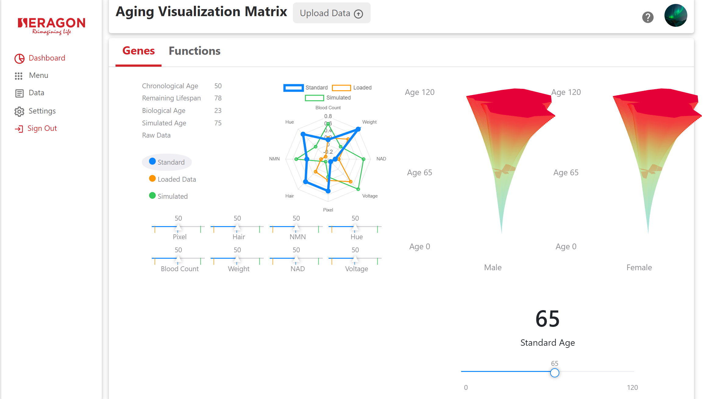

Projects and Experience

Silks
This is a metaverse startup that I currently work at. Silks is a metaverse company focusing on making horse racing and gambling more interactive in a way that users can purchase horse avatars that represent real thoroughbred horses.I build the Unity side of this product in which I work directly with an art team to provide proper integration of shaders, materials, lighting, modeling, and overall design into Unity. I work with webGL and essentially am building a 3rd person walking simulator that allows users to interact with their horses, look at a large interactive area full of horse racing history, purchase a farm to be able to share and gamble horses, and other features. I built the dialogue system, alongside many small features both in the frontend and backend of the simulation.
I plan to continue to work here for the near future.
Silks
Microscape
This is a startup in which I was a full stack developer at; this startup is in biotech focused on a product that allows users to add medical data and render the data as a 3D image, with tools allowing for coordination in viewing and uploading the image.I implemented multiplayer functionality with Photon and multi-user interaction for the application, added bioformats and itk api functionality allowing file types like .lif, .ims, and .czi files as input, parsing metadata and working on autogenerating detailed information of generating a 3D project, translating Java to C# code through dlls, adjusted the volume renderer algorithm and worked on different shader, cropping, filtering adjustments to the image, including multichannel direct volume rendering histogram changes to color and alpha points, adjusted sliders to work on the VR medium, including annotations using a brush tool, used AWS Lambda to save and load filtering/cropping/shader settings that are set for a specific image, and adjusted the volume renderer algorithm to limit frame and slice overload in large file inputs.
I had worked with Microscape for a year. I occassionally pitch in some small tasks and bug fixing in Unity.
Microscape
Prism
This is a startup in which I am a part time Unity developer at; this startup is a combination of Internet of Things with medical devices and gamification, essentially the product is using something like a Polar waistband to be able to play a game with breathing rate and other metrics, collecting the data for medical purposes.I have done some quality of life focused tasks to make the main product a cleaner experience, adjusted and added new messages sent back and forth from the Python server from Unity, created a minimal viable product of a new minigame, and added small new features that make the flow of the product more engaging, such as a combo system, recalibration buttons, and UI to showcase issues with detecting breathing.
I started working with Prism since April this year and intend to work more in this company depending on how it goes over time. The startup is still new and will need time to develop.

Norvoc Bioscience
This is a biotech company that primarily focused on aging drug selling. The project is focused on using aging models to predict age of patients, in which I built the frontend and parts of the backend using React, Node.js, Mongodb, Synology servers, and Three.js for data visualization. The goal is to use ML models to predict the age of a patient, in which the website would display the results in a human readable format, especially focusing on a cone shape to generate the results. I used three.js to generate this generalized cylinder model, along with adjusting open GLSL code to write a shader for the gradient, using a proxy server of Node.js to gather data stored in Mongodb, and using React's components and functional programming to create a responsive website and mobile application for ios and android.
A Secret...
This project will be revealed soon... I am working on a long term project that I am excited about, but will hold on revealing details for now.
Inside Job
This is a game built on Unity with the Photon Game Networking Architecture.Inside Job is an online multiplayer social deduction game inspired by games such as Among Us and Overcooked. Players are assigned roles such as “cops” or “robbers”. The robbers complete tasks to steal merchandise from the map, while the cops go undercover, pretending to be robbers while secretly trying to stop them. The robbers periodically can vote out members they believe to be cops. The game features whimsical art designs, cartoonish combat mechanics, and engaging social intrigue.
I focused specifically on multiple tasks: integrating the Photon Cloud network architecture with our Unity game, building pieces of the game involving dead reckoning, synchronization of game objects, and fleshing out the game design, building the lobby system and creating solutions for issues such as servers being in different locations, ping issues, and room finding and creating, and leading a team of three and presenting progress weekly. Overall, the project was a fun experience and I learned a lot on game networking architectures and how to create a multiplayer game in general.
Inside Job

Dungeon Smiths
This is a mobile (Android) game built on Unity, built in a team of 6. The team used sprints to work on the project over time, using version control systems and combining work on a week by week basis.Dungeon Smiths is a dungeon runner mobile game that switches between 2D and 3D mechanics throughtout the game. The game has a 3D space in which the player navigates mazes to find and interact with objects throughout the map in order to reach the next level. Ocassionally, upon reaching specific elements on the map such as encountering an enemy, the player jumps into a minigame in the 2D space. This game is split into three distinct levels, each with handcrafted enemies, obstacles, and minigames in both 3D and 2D space, seamlessly integrating the 3D exploration mode with the 2D minigames.
I focused specifically on building 2D minigames involving platformer mechanics and cutscenes. These minigames were predominantly endgame minigames, including the level 2 boss and level 3 boss. The level 2 boss was a platformer focused on jumping to a particular level of the map, similar to Jump King. The level 3 boss was a platformer designed in a similar fashion to Cuphead, focused on killing a boss through platformer mechanics. Other tasks I was in charge of included a Rat minigame destroying a large number of rats through using spells placed as particle effects, building a Minecart minigame which was a simple platforming movement minigame, and working on small tasks like the timer, cutscenes showing story elements, and adding simple menu UI for pausing and playing the game.
Dungeon Smiths
/HomeFragment.PNG)
Movie Details: Android App
This is an Android Application using Java and Android Studio as the frontend, Nodejs and Express as the backend proxy server, The Movie Database as a database, and Google Cloud Platform as a hosting service.This application is designed for users to be able to view a movie's details through The Movie Database, showcasing details, cast, reviews, and more backend data of a particular movie or TV show through Android devices. The application design maintained a frontend and backend despite the fact that it isn't a website: the same principles of load balancing and shooting the HTTP requests from the backend is cleaner and better practice. The choice of using standard Java and Android Studio is simply because Java is better documented than recent languages. The application is built on Fragments, separating parts of the application into clean modules. The backend has dynamic content served through the HTTP requests reaching TMDB's APIs and pulling JSON through the Nodejs and Express proxy server for the application.
The actual app is not hosted directly on github pages, just a project description page showcasing what was done. On request, I can give code/show the actual website in action.
Movie Details: Android App
/HomePageCarousel.PNG)
Movie Details: Website
This is a website using HTML, CSS, JS, Angular, Typescript, and Bootstrap as the frontend, Nodejs and Express as the backend proxy server, The Movie Database as a database, and Google Cloud Platform as a hosting service.This website is designed for users to be able to view a movie's details through The Movie Database, showcasing details, cast, reviews, and more backend data of a particular movie or TV show. The website design forced the dynamically served content through a backend built by Nodejs and Express as a proxy server. This proxy server split the load pressure by calling TMDB APIs in the backend, making it easier for the frontend to display the webpage under a heavier load. The frontend is built through Angular and Bootstrap, key frontend frameworks that make the design of the page much simpler to handle and makes the page easier to handle in building the frontend compared to deliberately creating the frontend with HTML and CSS.
The actual page is not hosted directly on github pages, just a project description page showcasing what was done. On request, I can give code/show the actual website in action.
Movie Details: Website
/HomePage.PNG)
Movie Scraper
This is a website using HTML, CSS, and JS as a frontend, python and flask as a backend proxy server, The Movie Database as a database, and Microsoft Azure as a hosting service.This website is designed for users to be able to search for movies through The Movie Database, finding details, cast, and reviews of a particular movie or TV show. The website design required use of a frontend and backend ecosystem to create a proper proxy server to pull JSON from the database. Python and flask were used to create that proxy server to split load pressure from directly calling TMDB APIs in the frontend, making it easier for the frontend to display the webpage under a heavier load. The frontend is not responsive, as the focus of the website is to emphasize good practice for backend.
The actual page is not hosted directly on github pages, just a project description page showcasing what was done. On request, I can give code/show the actual website in action.
Movie Scraper

Object Reconstruction
This project is a computer vision project focused on a concept named Object Reconstruction. The project is written in Python, using the Jupyter notebook and Anaconda distribution to formulate the code, and using OpenCV packages, Numpy libraries, and MeshLab. The concept of Object Reconstruction is to take a bunch of photos of an object using scanners and projectors, generate a mesh of each image, which are images focused on each individual side of the object, generate a baseline mesh from triangulation after figuring out camera calibration to find camera parameters, and finalizing the mesh using MeshLab to adjust the mesh with Poisson Surface Reconstruction.Some details include that camera calibration was through finding intrinsic and extrinsic parameters, reconstruction prioritizes creating a decode mask to filter improper pixels through XORing, and creating a point cloud with 3D points to create the shape of the mesh. Mesh clean up is done through Delaunay Triangulation, which is an algorithm that triangulates the exact mesh through the points from the point cloud. Poisson Surface Reconstruction and mesh alignment utilizes MeshLab, which is a tool that allows for easy clean up of the mesh and trying to push together the individual meshes into one model. After this step, the model is complete.
The project code can be released on request, but the report is below: feel free to look into the report for details of what exact algorithms are used and what process was taken to make the project happen.
Object Reconstruction

MDP Research
This project is a research project on Markov Decision Processes, focused on using Metric Temporal Logic Constraints on a translated abstract MDP for Value Iteration tasks. This project follows the basic formula for research projects, starting with reading multiple research papers to find a problem and come up with a creative solution, to writing a paper while conducting experiments using Python, networkx, pymdptoolbox, and py-metric-temporal-logic to test the abstract MDP algorithm against toy problems used in these packages. The basic concept is to use these logic formulas in MTL to forcibly control the Value Iteration process and prevent situations such as reward hacking, in which the AI behind the scenes attempts to cheat the reward system. The MDP is generally too large however, requiring an abstract MDP to control the MDP's size and shrink the graph into something that can use the MTL formulas to scalably apply the formulas against the graph. That is the summary of the problem and solution: how can we solve Value Iteration in an accurate and efficient way, and the solution is to create an abstract MDP with MTL Constraints.Unfortunately, I did not get to the point of submitting to a conference, but the final report is below if there is interest for the project concept.
MDP Research

Yelp Camp
This is a website using HTML, CSS, JS, and Bootstrap as a frontend, Nodejs and Express as a backend proxy server, Mongodb as a Nosql database, and Heroku as a hosting service.This website is designed for users to be able to create, view, review, and comment on different campgrounds that are all hosted within a Mongodb database. The mongodb holds together all authentication, campground information, and comments. The heroku service holds together the backend and hosts the entire site. Although this site's purpose is simple, the site is designed to show basic elements of frontend and backend development combined, including processes like hosting to the cloud and using a database to fuel dynamically created content.
Yelpcamp

Patatap Clone
This is an app that uses different libraries in addition to html, css, and js to make a Patatap Clone. The libraries include howler.js and paper.js, for sound and animation respectively.Patatap is an application that allows the user to push letters a-z on the keyboard to create animations and music. In this case, any key pressed from a-z creates a noise along with a small circle that shrinks quickly. This application is demonstrative of howler.js and paper.js's functions and how to incorporate these functions into the code of the front-end. The howler.js allows for different sounds to be played depending on the key pressed and paper.js allows for different colored circles to appear when the keys are pressed.
Note: Neither howler.js nor paper.js is my code/property and I'm merely using it to create this patatap clone. This is all for non-commercial use/practice.
Patatap Clone

Color Game
This is a game built on html, css, and javascript that is designed to focus on DOM manipulation and interacting with javascript with the front-end code.This game's goals are to have the user select the correct RGB color from the 6 (or 3 if the difficulty is set to Easy) colors. The user can select a color by clicking on a square. The user can reset the game by clicking on New Game or by changing the difficulty. Once a color is considered correct, all 6 clickable squares and the exterior border becomes that color. If a clicked color is incorrect, the clicked square will disappear.
Color Game

Todo List
This is an app built on html, css, javascript, and jQuery.This application allows a user to add to a todo list, allowing a user to add new elements to the list with the input below the title, delete elements that are done by clicking the revealable button to the left of the particular element, cross out elements that are done by clicking on the element itself, and reveal and remove the user input by clicking on the plus sign. These use cases are similar to what someone needs for a checkbook and all use jQuery methods to allow the Javascript to work with the rest of the front-end code. All clickable items use jQuery's functions such as fading in and out.
Todo List

AP Art Studio 2D Portfolio
This is an image gallery of previously created artwork during my high school years. All of the artwork seen in each page (e.g. my home page's acryllic painting) are from a 2D Portfolio that I had done years ago.Just a note: do not use this artwork on other sites/areas without permission/credit. This artwork is only displayed as more practice for html/css grid designs.
AP Art Studio 2D Portfolio